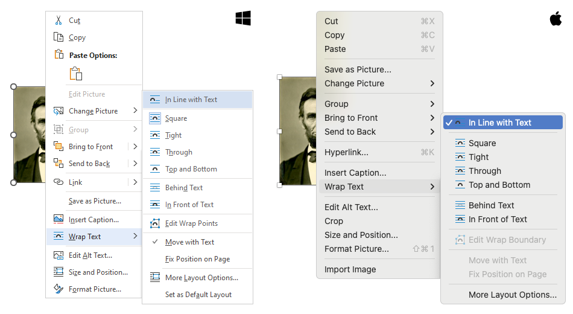
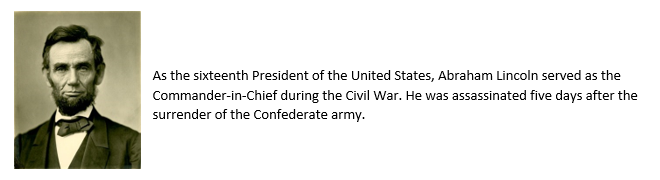
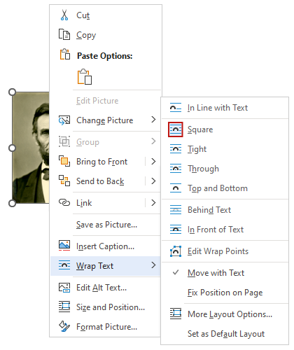
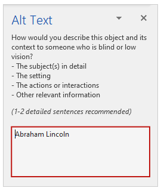
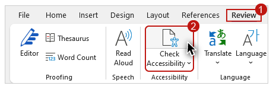
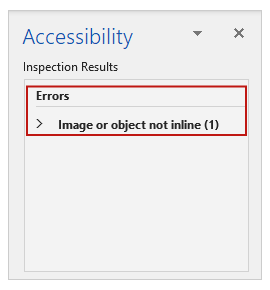
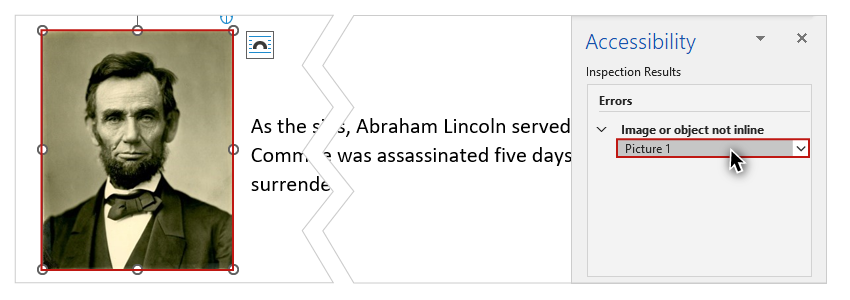
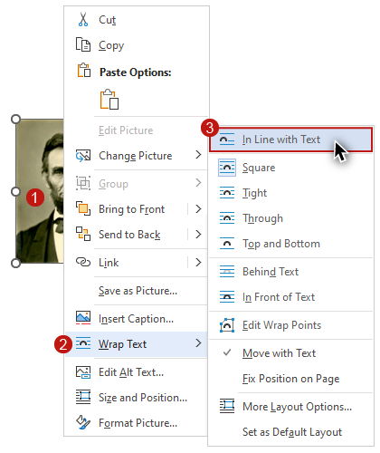

Video
Example File
Guide
Images: Part 3
Images in Word documents must be positioned correctly in order to be accessible to all users.

Only images with the Wrap Text style of "In Line with Text" are recognized by screen reading software.
Fortunately, this is the default Wrap Text style that is applied when an image is added.
The process for inspecting and editing the Wrap Text style is the same in Word for Windows and Mac. There are some differences between the Windows and Mac user interfaces—

—but these differences do NOT impact the process.
Objective
- Identify the Wrap Text style required for optimized accessibility in Word.
I'll open the example document in Word for Windows.
Example 1
Example 1 shows a common method for positioning images in Word documents. An image of Abraham Lincoln is "floated" to the right of some document text.

Inspecting the Wrap Text style
I'll right-click the image and select "Wrap Text" from the menu. I can see that the image is currently positioned with the "Square" style. 
I’ll right-click the image again and select "Edit Alt Text" from the menu. I see that the image has an Alt Text value of "Abraham Lincoln".

Screen reading software demonstration
I’ll open up NVDA to see how it reads this example:
"As the sixteenth President of the United States, Abraham Lincoln served as the Commander-in-Chief during the Civil War. He was assassinated five days after the surrender of the Confederate army."
[narrator resumes]
NVDA skips over the image as if it were not there. The user is not informed that a graphic is present and the Alt Text is not read.
Accessibility Checker
Word has a built-in tool that will identify some accessibility issues. I’ll explore the full range of these issues in Module 3. In this video I’ll focus on resolving the issue related to an image’s position, as determined by its Wrap Text style. The process to open this tool is the same on Windows and Mac.
To check for an image positioning issue on Windows (or Mac):
-
Select the REVIEW tab on the Ribbon.
-
Click the Check Accessibility tool (the Accessibility pane will open).

-
In the Inspection Results, under the “Errors” section look for the “Image or object not inline” issue.

When I click on this issue to expand it, and then click on the document element listed (“Picture 1”), the image of Abraham Lincoln receives focus on the document as if I had selected it with the mouse or keyboard.

Optimizing the Wrap Text style
As previously mentioned, at this time there is only one Wrap Text style that will position an image so that it is available to screen reading software users––“Inline with Text.”
To optimize the Wrap Text style of an image in Word for Windows (or Mac):
-
Right-click on the image.
-
Select "Wrap Text" from the menu.
-
Select "In Line with Text" from the submenu.

Now that this image is positioned inline, it is no longer flagged in the Inspection Results.
By implementing the principles and processes you have learned for optimizing the accessibility of images, the information provided by non-text elements in your documents will be available to the largest group of users, including blind users and those with other visual impairments. In the next section of the course, you will learn how to optimize Hyperlinks.